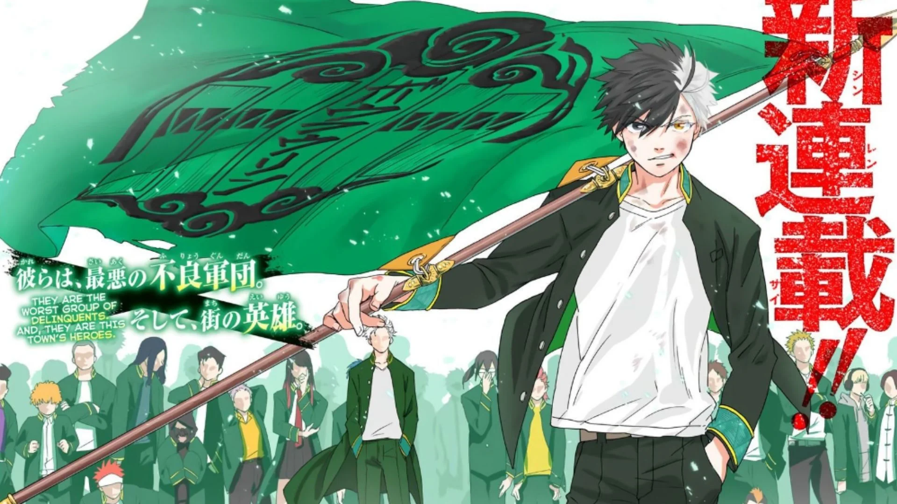

Школа «Фурин» печально известна особой системой ранжирования учеников через поединки на бойцовской арене. Кто сильнее – тот главнее. Харука Сакура – превосходный боец, он уверен, что навыки позволят ему пробиться на самый верх школьной иерархии. Чего Харука не ожидал, так это того, что все ученики «Фурин» – одно сплоченное братство, готовое горой стоять за любого из них. Бои на арене служат тренировками для оттачивания навыков защитников общественного порядка.
Ученики «Фурин» следят за хулиганами и преступниками, пресекая любые правомерные действия. Харуке придется пересмотреть намерения и урезонить агрессивный характер, если он хочет перебраться со стороны полукриминального существования на светлую, геройскую сторону.